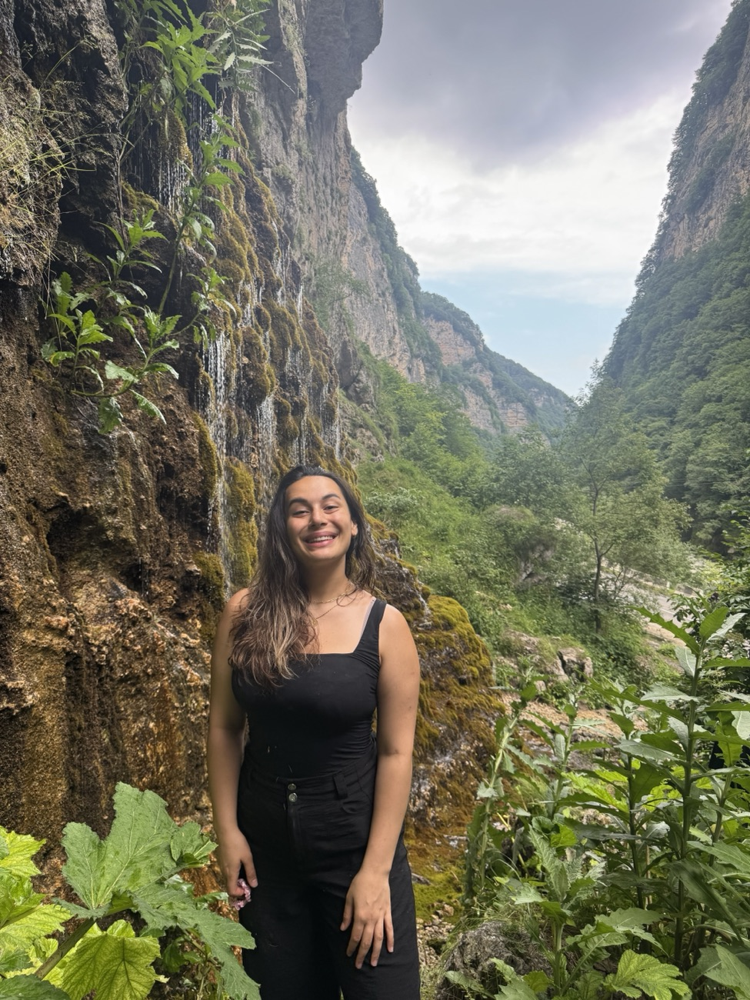
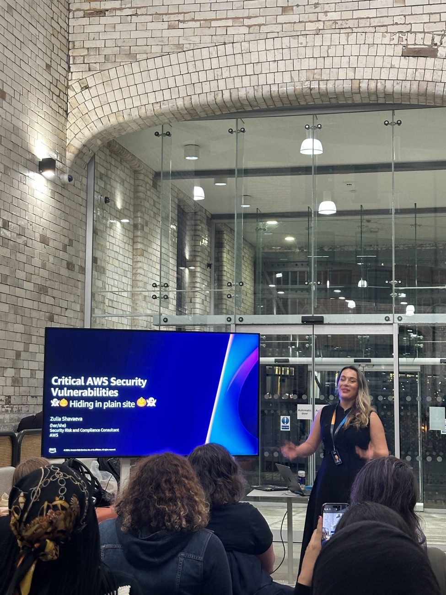

AI security, EMEA
I secure generative AI. And I help people get into the field.
Senior GenAI Security Consultant and EMEA security lead at the AWS Generative AI Innovation Center. I work with regulated organisations on deploying frontier models and agents safely, and I run a free quiz and learning paths for security people who want to move into AI security.
16 questions, about 4 minutes, no signup
Start here
How I can help you into AI security
Everything here is free and needs no account. Start with the quiz if you are not sure where you fit; open a path if you already know.
Find the AI security role that fits the work you already do
Sixteen questions about how you work today, not a self-rating. You get one of six roles, the skills it asks for against what you have, and a week-by-week plan for the gaps.
Take the quiz →Follow one of six learning paths
Engineer, red team, architect, governance, consulting, research. Each path was built from real job postings: skills in the order to learn them, free resources first, one exercise that proves it.
See the six paths →Use the Learn library
Thirteen skill pages, from LLM and agent security to IAM, cloud and governance. Curated resources by level, a short brief per skill with practice questions, and the paid options where they are worth it.
Open the Learn library →Talks, workshops and mentoring
I speak on GenAI security, run hands-on workshops and mentor women moving into cloud and security through AWS Cloud Women Manchester. If you want me at your event, message me on LinkedIn.
See talks and community →
About
I am the EMEA security lead for the AWS Generative AI Innovation Center: the security authority on GenAI engagements across the region, and the escalation point when security decides whether an AI project goes ahead.
I have spent eight years in engineering, DevOps and security for regulated enterprises, the last five in security. I have run more than 45 engagement security assessments for banks, insurers, automotive finance, pharma, energy and public sector organisations across the UK, EU, Middle East and Africa.
My specialism is the part people find hardest: EU data residency, data retention and Zero Data Retention, GDPR and DPIA-aligned data classification, and the security of agentic systems, including MCP and autonomous agents. I spend my days with CISOs, DPOs, compliance officers and AI governance boards, translating what a frontier model can do into a deployment a regulator will accept.
Before security I built manufacturing scheduling software and taught algorithms and data structures at Durham University, where I read Computer Science.
Talks and community
Talks, workshops, and a community I lead
I speak about GenAI security and I build the rooms where other people get to speak. Message me on LinkedIn if you want either at your event.
- GenAI security capture-the-flagSelected for AWS re:Invent 2026 GameDayI wrote a CTF spanning prompt injection chains, guardrail bypass and data exfiltration through tool use.
- Critical AWS security vulnerabilities: hiding in plain sightCommunity talk, ManchesterA talk on the AWS misconfigurations that hide in plain sight.
- Public-speaking programmeAWS Cloud Women ManchesterA programme that gets first-time speakers on stage. 300+ sign-ups so far.
- Security workshops for delivery teamsAWS Professional Services, EMEAHands-on enablement for customer-facing teams on securing GenAI engagements.

I lead AWS Cloud Women Manchester, the largest AWS Cloud Women chapter in the UK: monthly events and workshops, and a public-speaking programme that has had more than 300 sign-ups. I also mentor women moving into cloud and security careers. AWS Cloud Women Manchester on Meetup.
Links
Pages worth opening
The things I would send you if you asked what I have been working on.
- AI Security Career PlatformThe quiz, six paths and the Learn library. Free, no account, nothing leaves your browser.
- Learn libraryThirteen skill pages with curated resources, briefs and practice questions.
- AWS Cloud Women ManchesterThe chapter I lead. Monthly events, workshops, first-time speakers.
- How the platform was builtResearch notes, job-posting data and source code on GitHub.
- LinkedInWhere I post and where to reach me.
The full CV
Roles, selected work, expertise and certifications on one page, with a PDF to download.